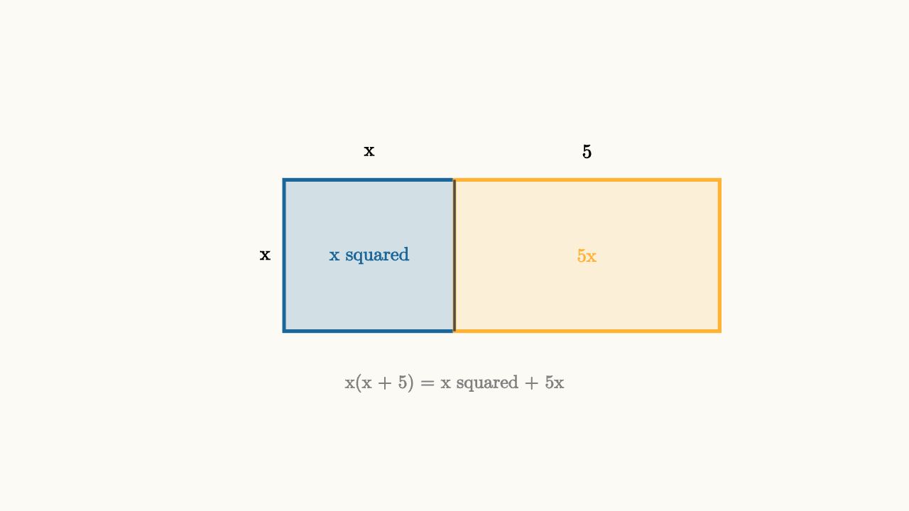
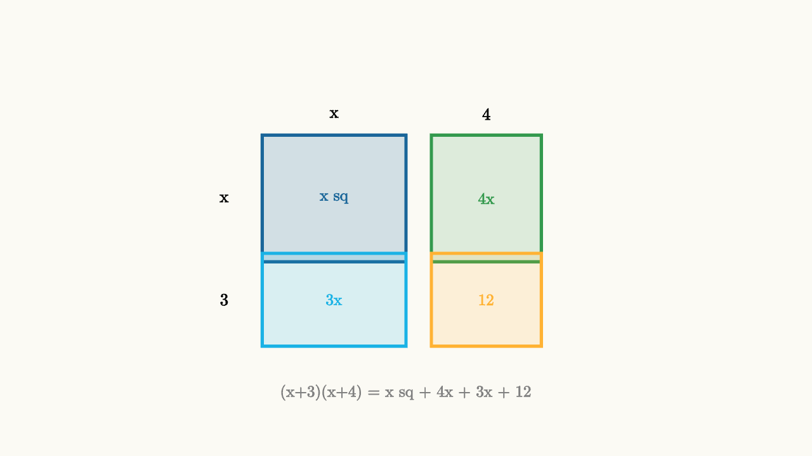
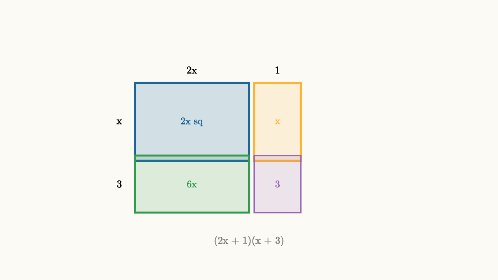
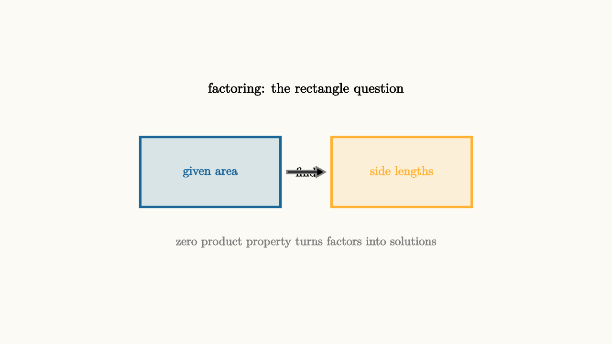

Factoring Is Area With a Memory
Here is a multiplication trick for mental math. What is $12 \times 13$?
You might split this into $12 \times 10 + 12 \times 3 = 120 + 36 = 156$. That works perfectly. But here is another way to think about it: draw a $12$-by-$13$ rectangle and cut it cleverly.
A $12 \times 13$ rectangle is a $10 \times 13$ rectangle plus a $2 \times 13$ rectangle. Or it is a $12 \times 10$ rectangle plus a $12 \times 3$ rectangle. Either way, you have broken a big area into smaller pieces whose areas you know.
That is the area model. And it turns out that this simple geometric idea is the hidden structure behind factoring, expanding, FOIL, and completing the square. All of those symbolic rules are just the area model wearing different clothes.
A Rectangle With an Unknown Side
Now let's make things interesting. What if one of the side lengths is unknown?
Suppose a rectangle has height $x$ and width $x + 5$. What is its area?

source
background = [0.985, 0.98, 0.955, 1]
camera = Camera(4.8b)
mesh diagram = block {
. fill{alpha{0.18} BLUE} stroke{BLUE, 3} center{[-0.9, 0, 0]} Rect([1.8, 1.6])
. fill{alpha{0.15} ORANGE} stroke{ORANGE, 3} center{[1.4, 0, 0]} Rect([2.8, 1.6])
. stroke{DARK_GRAY, 2} Line(start: [0, -0.8, 0], end: [0, 0.8, 0])
. color{BLUE} center{[-0.9, 0, 0]} Text("x squared", 0.72)
. color{ORANGE} center{[1.4, 0, 0]} Text("5x", 0.72)
. color{BLACK} center{[-2.0, 0, 0]} Text("x", 0.74)
. color{BLACK} center{[-0.9, 1.1, 0]} Text("x", 0.74)
. color{BLACK} center{[1.4, 1.1, 0]} Text("5", 0.74)
. color{GRAY} center{[0, -1.35, 0]} Text("x(x + 5) = x squared + 5x", 0.7)
}The rectangle splits down the middle. The left piece is $x$ tall and $x$ wide: area $x^2$. The right piece is $x$ tall and $5$ wide: area $5x$. The total area is $x^2 + 5x$.
And there is the algebra identity:
The left side describes the rectangle as a single piece with dimensions $x$ and $(x+5)$. The right side describes it as two pieces added together. Same rectangle, two descriptions.
This is not just a convenient picture. It is the actual reason the distributive law works. Multiplication distributes over addition because area distributes over area. You can split a rectangle any way you like, and the total area stays the same.
Two-Dimensional Expansion
Now let's try something with two binomials: $(x+3)(x+4)$.
Draw a rectangle with height $(x+3)$ and width $(x+4)$. Cut it into four pieces by splitting the height at $x$ and $3$, and splitting the width at $x$ and $4$.

source
background = [0.985, 0.98, 0.955, 1]
camera = Camera(4.8b)
mesh diagram = block {
. fill{alpha{0.18} BLUE} stroke{BLUE, 3} center{[-0.85, 0.35, 0]} Rect([1.7, 1.5])
. fill{alpha{0.15} GREEN} stroke{GREEN, 3} center{[0.95, 0.35, 0]} Rect([1.3, 1.5])
. fill{alpha{0.15} CYAN} stroke{CYAN, 3} center{[-0.85, -0.85, 0]} Rect([1.7, 1.1])
. fill{alpha{0.15} ORANGE} stroke{ORANGE, 3} center{[0.95, -0.85, 0]} Rect([1.3, 1.1])
. color{BLUE} center{[-0.85, 0.35, 0]} Text("x sq", 0.68)
. color{GREEN} center{[0.95, 0.35, 0]} Text("4x", 0.68)
. color{CYAN} center{[-0.85, -0.85, 0]} Text("3x", 0.68)
. color{ORANGE} center{[0.95, -0.85, 0]} Text("12", 0.68)
. color{BLACK} center{[-2.15, 0.35, 0]} Text("x", 0.72)
. color{BLACK} center{[-2.15, -0.85, 0]} Text("3", 0.72)
. color{BLACK} center{[-0.85, 1.35, 0]} Text("x", 0.72)
. color{BLACK} center{[0.95, 1.35, 0]} Text("4", 0.72)
. color{GRAY} center{[0, -1.95, 0]} Text("(x+3)(x+4) = x sq + 4x + 3x + 12", 0.68)
}Four pieces:
- Top-left: $x \times x = x^2$
- Top-right: $4 \times x = 4x$
- Bottom-left: $x \times 3 = 3x$
- Bottom-right: $4 \times 3 = 12$
Add them all: $x^2 + 4x + 3x + 12 = x^2 + 7x + 12$.
So $(x+3)(x+4) = x^2 + 7x + 12$.
The middle term $7x$ came from the two rectangular strips on the sides. The $3$ and $4$ were the heights of those strips. Their sum is the coefficient of $x$.
The constant term $12$ came from the corner piece. The $3$ and $4$ multiplied together.
This is why the pattern works for any two binomials. When you expand $(x+a)(x+b)$:
The coefficient of $x$ is the sum of the two constants. The constant term is their product. The rectangle makes that obvious: the strips contribute the sum, and the corner contributes the product.
FOIL Is Just Naming the Four Pieces
You may have learned the FOIL method: First, Outer, Inner, Last. This is just the four-piece area model with different names.
For $(x+3)(x+4)$:
- First: $x \cdot x = x^2$ (the big square, top-left)
- Outer: $x \cdot 4 = 4x$ (the right strip, top-right)
- Inner: $3 \cdot x = 3x$ (the bottom strip, bottom-left)
- Last: $3 \cdot 4 = 12$ (the corner, bottom-right)
FOIL is a mnemonic for walking around the rectangle in a specific order. The area model is more flexible because you can use it to expand any number of terms, not just two binomials.
Factoring Is Reading the Rectangle Backwards
Now here is the key insight. Factoring is the same picture, but you are starting from the area and working out the side lengths.
Given $x^2 + 7x + 12$, ask: can this be the area of a nice rectangle?
For a rectangle with corners $x^2$, some amount of $x$, and a constant, the side lengths must look like $(x + a)$ and $(x + b)$ for some numbers $a$ and $b$. We already know:
So we need $a + b = 7$ and $a \times b = 12$.
This is a search problem: find two numbers that add to $7$ and multiply to $12$.
Let's think systematically. Pairs that multiply to 12: $(1,12)$, $(2,6)$, $(3,4)$. Which pair adds to $7$? The pair $(3,4)$ does: $3 + 4 = 7$.
So $x^2 + 7x + 12 = (x+3)(x+4)$.
The area model transforms factoring from a guess-and-check mystery into a systematic search: find the side lengths of the rectangle.
source
background = [0.985, 0.98, 0.955, 1]
camera = Camera(4.8b)
"area given"
mesh eq = block {
. color{BLACK} center{[0, 0.6, 0]} Text("x squared + 7x + 12", 0.78)
. color{GRAY} center{[0, -0.3, 0]} Text("what are the rectangle's side lengths?", 0.68)
}
play Write(0.8)
"identify pieces"
eq = block {
. fill{alpha{0.18} BLUE} stroke{BLUE, 3} center{[-1.5, 0.2, 0]} Rect([1.5, 1.4])
. color{BLUE} center{[-1.5, 0.2, 0]} Text("x sq", 0.68)
. fill{alpha{0.15} GREEN} stroke{GREEN, 3} center{[0.2, 0.2, 0]} Rect([2.2, 1.4])
. color{GREEN} center{[0.2, 0.2, 0]} Text("7x", 0.68)
. fill{alpha{0.15} ORANGE} stroke{ORANGE, 3} center{[1.7, 0.2, 0]} Rect([1.2, 1.4])
. color{ORANGE} center{[1.7, 0.2, 0]} Text("12", 0.68)
. color{GRAY} center{[0, -1.0, 0]} Text("need: sum = 7, product = 12", 0.68)
}
play Trans(1.0)
"found the pair"
eq = block {
. fill{alpha{0.18} BLUE} stroke{BLUE, 3} center{[-0.85, 0.35, 0]} Rect([1.7, 1.5])
. fill{alpha{0.15} GREEN} stroke{GREEN, 3} center{[0.95, 0.35, 0]} Rect([1.3, 1.5])
. fill{alpha{0.15} CYAN} stroke{CYAN, 3} center{[-0.85, -0.85, 0]} Rect([1.7, 1.1])
. fill{alpha{0.15} ORANGE} stroke{ORANGE, 3} center{[0.95, -0.85, 0]} Rect([1.3, 1.1])
. color{BLACK} center{[-0.85, 0.35, 0]} Text("x sq", 0.68)
. color{BLACK} center{[0.95, 0.35, 0]} Text("4x", 0.68)
. color{BLACK} center{[-0.85, -0.85, 0]} Text("3x", 0.68)
. color{BLACK} center{[0.95, -0.85, 0]} Text("12", 0.68)
. color{GREEN} center{[0, -1.95, 0]} Text("(x + 3)(x + 4)", 0.72)
}
play Trans(1.0)When the Constant Is Negative
Negative signs can feel mysterious in factoring. The area model demystifies them completely.
If the constant in $x^2 + bx + c$ is negative, the two numbers $a$ and $b$ must have opposite signs. One is positive and one is negative.
Consider $x^2 + x - 12$. We need $a + b = 1$ and $a \times b = -12$.
Pairs that multiply to $-12$ (one positive, one negative): $(1,-12)$, $(-1,12)$, $(2,-6)$, $(-2,6)$, $(3,-4)$, $(-3,4)$. Which pair sums to $1$? The pair $(-3, 4)$: $-3 + 4 = 1$.
So $x^2 + x - 12 = (x-3)(x+4)$.
What about $x^2 - 7x + 12$? Now we need $a + b = -7$ and $a \times b = 12$. The product is positive (both same sign), and the sum is negative (both negative). So both numbers are negative. Pairs of negative numbers multiplying to 12: $(-1,-12)$, $(-2,-6)$, $(-3,-4)$. Which sums to $-7$? The pair $(-3,-4)$.
So $x^2 - 7x + 12 = (x-3)(x-4)$.
Here is the pattern: the sign of the constant tells you whether the two numbers have the same sign or different signs. The sign of the middle term tells you the direction when they are the same sign.
| Constant positive, middle positive | both positive | | Constant positive, middle negative | both negative | | Constant negative | opposite signs |
The General Case: $ax^2 + bx + c$
When the leading coefficient is not $1$, the rectangle becomes a slightly different puzzle. Now you are splitting $ax^2$ along one axis and $c$ along the other.
Consider $2x^2 + 7x + 3$. The rectangle has one side being $2x$ and something, and the other being $x$ and something.
Here is a systematic approach called the "AC method." Multiply the leading coefficient by the constant: $2 \times 3 = 6$. Find two numbers that multiply to $6$ and add to $7$ (the middle coefficient). Those are $1$ and $6$.
Now rewrite the middle term as $x + 6x$:
Factor by grouping (taking common factors from pairs):
The factor $(2x + 1)$ appears in both groups. Factor it out:
The area model explains why this works: we are splitting the middle rectangle into two strips and finding the shared dimensions.

source
background = [0.985, 0.98, 0.955, 1]
camera = Camera(4.8b)
mesh diagram = block {
. fill{alpha{0.18} BLUE} stroke{BLUE, 3} center{[-1.1, 0.35, 0]} Rect([2.2, 1.5])
. fill{alpha{0.15} ORANGE} stroke{ORANGE, 3} center{[0.55, 0.35, 0]} Rect([0.9, 1.5])
. fill{alpha{0.15} GREEN} stroke{GREEN, 3} center{[-1.1, -0.85, 0]} Rect([2.2, 1.1])
. fill{alpha{0.15} PURPLE} stroke{PURPLE, 2} center{[0.55, -0.85, 0]} Rect([0.9, 1.1])
. color{BLUE} center{[-1.1, 0.35, 0]} Text("2x sq", 0.68)
. color{ORANGE} center{[0.55, 0.35, 0]} Text("x", 0.68)
. color{GREEN} center{[-1.1, -0.85, 0]} Text("6x", 0.68)
. color{PURPLE} center{[0.55, -0.85, 0]} Text("3", 0.68)
. color{BLACK} center{[-2.5, 0.35, 0]} Text("x", 0.72)
. color{BLACK} center{[-2.5, -0.85, 0]} Text("3", 0.72)
. color{BLACK} center{[-1.1, 1.35, 0]} Text("2x", 0.72)
. color{BLACK} center{[0.55, 1.35, 0]} Text("1", 0.72)
. color{GRAY} center{[0, -1.95, 0]} Text("(2x + 1)(x + 3)", 0.7)
}The Zero Product Property: Why Factoring Solves Equations
So far we have been using factoring purely as an algebraic art form. But its main power in algebra is solving equations.
Here is the key tool: the zero product property.
This works for real numbers because of how multiplication works: a product is zero exactly when at least one factor is zero. There is no other way for a product to be zero.
Notice how special this is. If $AB = 12$, that tells you almost nothing about $A$ and $B$ individually. They could be $1$ and $12$, or $3$ and $4$, or $2.4$ and $5$, or infinitely many other combinations. But if $AB = 0$, you know with certainty that at least one of them is zero.
This is why we try to get one side equal to zero before factoring.
The factor theorem converts the geometric picture (side lengths of a rectangle) into a solving tool. Each factor corresponds to a root of the equation.
Here is a common mistake to watch out for. The zero product property only works when one side is zero. If someone writes:
That reasoning is completely wrong. Factoring the left side does not help when the right side is nonzero. The only exception is zero.
The Difference of Squares
There is a beautiful special case worth knowing by heart. Consider $(x+a)(x-a)$. By the rectangle model:
The middle terms cancel! This is called a difference of squares. It factors whenever you see a perfect square minus a perfect square:
Geometrically, a difference of squares is what happens when you take a large square, remove a smaller square from one corner, and rearrange the L-shaped remaining piece into a rectangle.
source
background = [0.985, 0.98, 0.955, 1]
camera = Camera(4.8b)
"two squares"
mesh pic = block {
. fill{alpha{0.15} BLUE} stroke{BLUE, 3} center{[-0.5, 0, 0]} Rect([3.0, 3.0])
. fill{alpha{0.25} ORANGE} stroke{ORANGE, 3} center{[0.5, -0.5, 0]} Rect([2.0, 2.0])
. color{BLUE} center{[-1.5, 0, 0]} Text("x sq", 0.68)
. color{ORANGE} center{[0.5, -0.5, 0]} Text("a sq", 0.68)
. color{BLACK} center{[0, 1.95, 0]} Text("x squared minus a squared", 0.7)
}
play Write(0.8)
"factor reveals two roots"
pic = block {
. fill{alpha{0.18} BLUE} stroke{BLUE, 3} center{[-1.0, 0.2, 0]} Rect([2.0, 1.5])
. fill{alpha{0.15} GREEN} stroke{GREEN, 3} center{[1.0, 0.2, 0]} Rect([2.0, 1.5])
. color{BLUE} center{[-1.0, 0.2, 0]} Text("x + a", 0.74)
. color{GREEN} center{[1.0, 0.2, 0]} Text("x - a", 0.74)
. color{BLACK} center{[0, 1.3, 0]} Text("(x + a)(x - a)", 0.74)
}
play Trans(1.0)Perfect Square Trinomials
One more pattern that rewards recognition. When both roots of a quadratic are the same, you get:
The middle coefficient is exactly twice the square root of the constant term. So $x^2 + 6x + 9$ factors as $(x+3)^2$ because $6 = 2 \times 3$ and $9 = 3^2$.
This appears in the technique called completing the square, which we will explore more when we study the quadratic formula. The idea is to add and subtract just enough to turn part of a quadratic into a perfect square trinomial.
The Big Picture
The area model unifies all these ideas into one visual narrative:
- Expanding is computing the area from the side lengths.
- Factoring is recovering the side lengths from the area.
- FOIL is naming the four pieces of a two-by-two rectangle.
- The AC method is splitting the middle strip to reveal hidden common factors.
- Difference of squares is a rectangle where the middle strips cancel.
- Perfect square trinomials are actual squares.
Every time you factor, you are looking for a rectangle. The roots of the equation are the values that make a side length equal to zero. Setting a side length to zero collapses the rectangle, and the whole area vanishes.
That collapse is the geometric meaning of solving $p(x) = 0$: find the values of $x$ where the rectangle has zero area.

source
background = [0.985, 0.98, 0.955, 1]
camera = Camera(4.8b)
mesh diagram = block {
. color{BLACK} center{[0, 1.3, 0]} Text("factoring: the rectangle question", 0.78)
. fill{alpha{0.15} BLUE} stroke{BLUE, 3} center{[-1.5, 0, 0]} Rect([2.2, 1.1])
. color{BLUE} center{[-1.5, 0, 0]} Text("given area", 0.7)
. color{BLACK} center{[0, 0, 0]} Text("find", 0.7)
. fill{alpha{0.15} ORANGE} stroke{ORANGE, 3} center{[1.5, 0, 0]} Rect([2.2, 1.1])
. color{ORANGE} center{[1.5, 0, 0]} Text("side lengths", 0.7)
. stroke{GRAY, 2} Arrow(start: [-0.3, 0, 0], end: [0.3, 0, 0])
. color{GRAY} center{[0, -1.1, 0]} Text("zero product property turns factors into solutions", 0.68)
}The rectangle with a memory: once you factor an expression, the factors remember every root. The graph of a polynomial crosses the x-axis at each linear factor's zero. The structure of the expression reflects its geometry, and geometry is always honest.